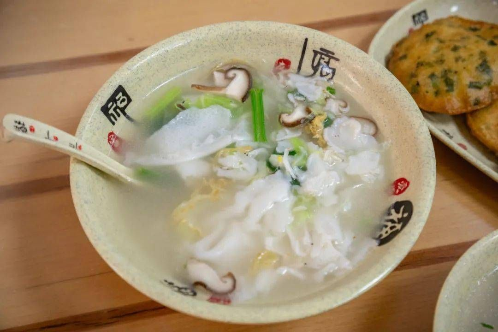
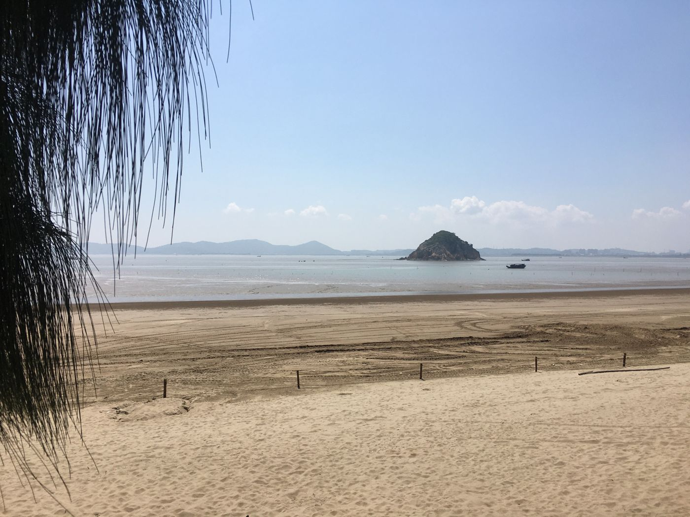
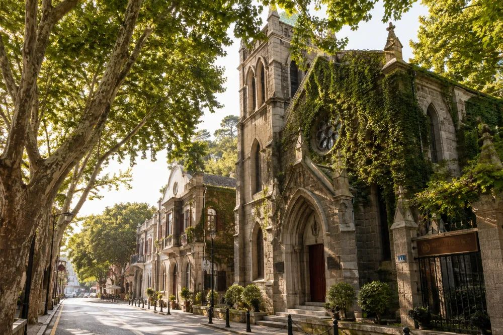

首页 / 福州攻略
福州吃喝玩乐攻略
来琅岐岛之前，先在福州市区吃一圈、逛一圈。这里是常被客人问到的吃喝和路线；岛上怎么玩，看琅岐岛攻略。

福州48小时吃什么
来福州两天怎么吃：锅边糊、海蛎饼、捞化、芋泥、花生汤、荔枝肉、红鲟饭、牛滑、煎包，按早中晚排好的吃货路线，最后去琅岐岛加一顿海鲜。

第一次来福州玩3天
第一次来福州 3 天怎么安排：三坊七巷、朱紫坊、上下杭、烟台山、闽江之心、福道、西禅寺、福建博物院的路线，以及逛巷子、走福道、看夜景和预约的建议。

福州慢游清单
福州低预算怎么玩：三坊七巷、上下杭、烟台山、福道、福建博物院、西湖公园、朱紫坊、闽江之心，大多不要门票；再留一天去琅岐岛看海。

福州不只有三坊七巷
福州小众景点：西禅古寺、鼓岭、琅岐龙鼓海滩、连江奇达村、永泰嵩口古镇、乌山、红坊、福清大姆山草场，古寺、山林、海滩、渔村、草场各有风景。

福州2日慢游
福州两天慢慢玩：烟台山老洋房和闽江日落、社区闽菜馆、闽江之心夜景、朱紫坊喝茶、上下杭；还有一天就去琅岐岛海边。